00:04到目前为止的视频中，你已经学习了监督学习和无监督学习，以及两者的例子。
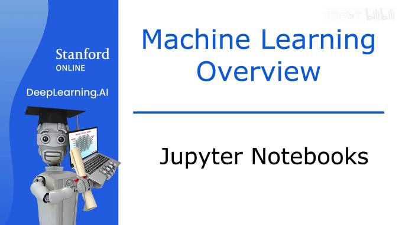
00:11为了让你更深入地理解这些概念，我想邀请你在本课程中亲自查看、运行，甚至稍后自己编写代码来实现这些概念。
00:22当今机器学习和数据科学从业者最广泛使用的工具是 Jupyter。
00:30这是我们许多人用来编写代码、进行实验和尝试想法的默认环境。
00:36因此，在本课程中，就在你的网页浏览器里，你也将能够使用 Jupyter 环境来亲自测试其中的代码。
00:46这不是什么临时搭建的简化环境。
00:50它与许多大型公司的开发人员正在使用的环境、工具完全相同，也就是 Jupyter。
01:02在整个课程中，你会看到的实验是可选的实验，你可以打开它们并逐行运行，通常不需要自己编写任何代码。
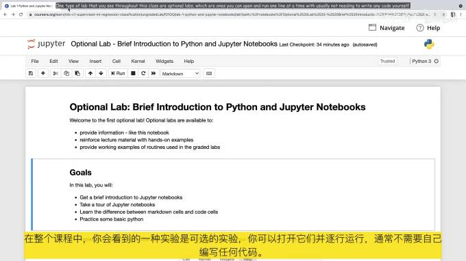
01:15可选实验被设计得非常简单，我可以保证你会在每一个实验上都获得满分，因为根本没有分数。
01:25你只需要打开它，然后运行我们提供的代码就可以了。
01:30通过阅读并运行可选实验中的代码，你将了解机器学习代码的运行方式。
01:38你应该能够相对较快地完成它们，只需从上到下逐行运行即可。
01:47可选实验是完全可选的，如果你不想做，完全可以不做。
01:52但我希望你能看一下，因为运行它们会让你有更深的体会，让你对机器学习算法、机器学习代码的实际样子多一些经验。
02:05从下周开始，还会有一些练习实验，这将给你机会自己编写一些代码。
02:12不过我们下周才会讲到，所以现在不用担心。
02:18我希望你能够完成下一个可选实验，并完成本周的其余内容。
02:24那么，让我们看一个例子。
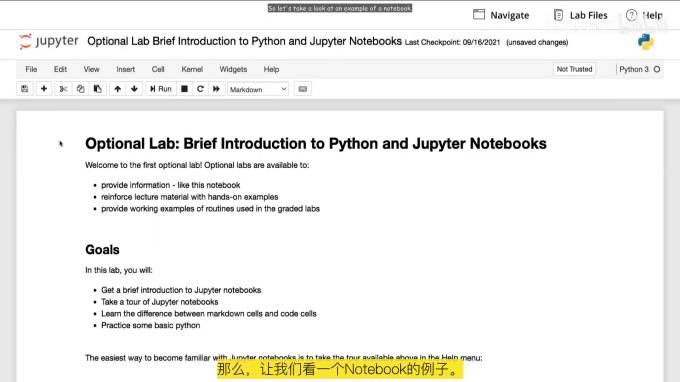
02:27这是你进入第一个可选实验时看到的内容。
02:31请随意上下滚动浏览，用鼠标悬停在不同菜单上，并查看这里的各种选项。
02:40你可能注意到中有两种类型的块，也称为单元格。
02:46这两种类型的单元格分别是。
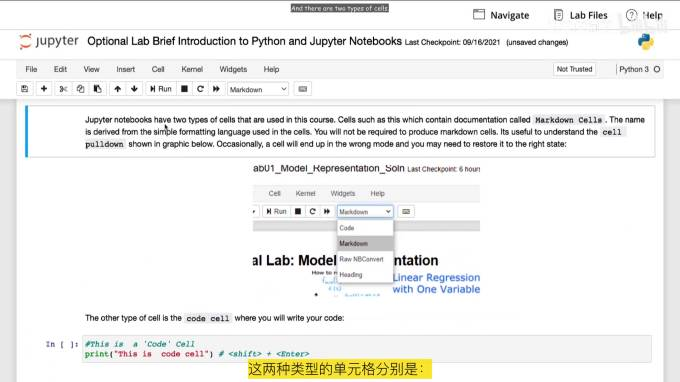
02:50一种是所谓的单元格，基本上就是一堆文本。
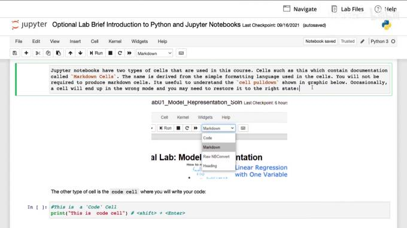
02:56所以如果你不喜欢我们写的文本，你实际上可以在这里编辑文本。
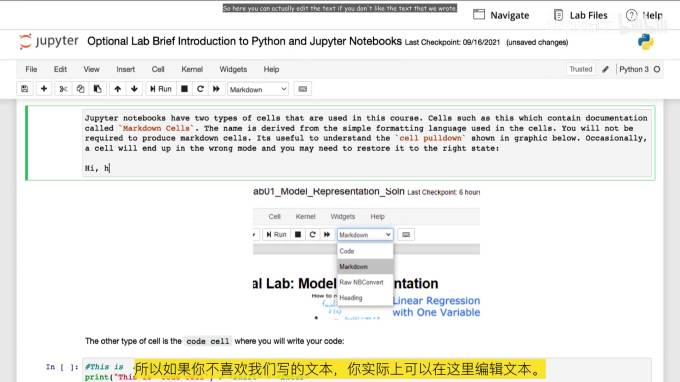
03:05然后是第二种类型的块或单元格，看起来像这样，这里我们已经提供了代码，如果你想运行这个代码单元格，按 Shift 加 Enter 键就会运行这个代码单元格中的代码。
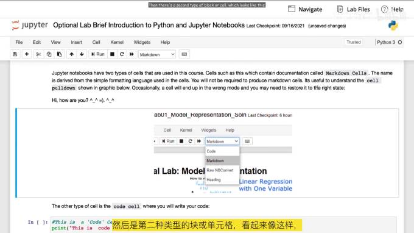
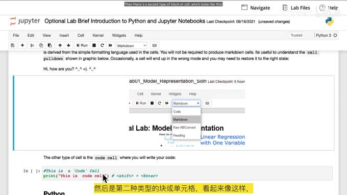
03:21这里我们已经提供了代码，如果你想运行这个代码单元格，按 Shift 加 Enter 键就会运行这个代码单元格中的代码。
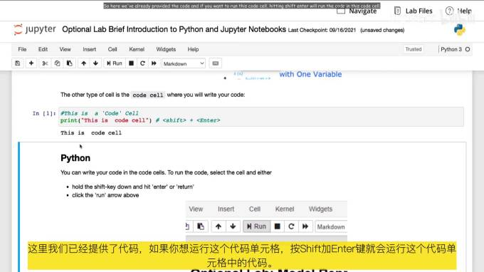
03:24哦，顺便说一下，如果你点击单元格，它会显示所有的这些格式，继续在你的键盘上按 Shift 加 Enter 键，这也会把它转换回这个格式良好的文本。
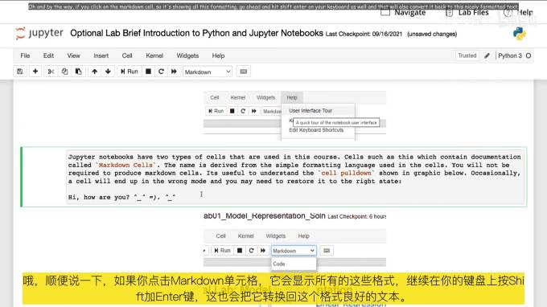
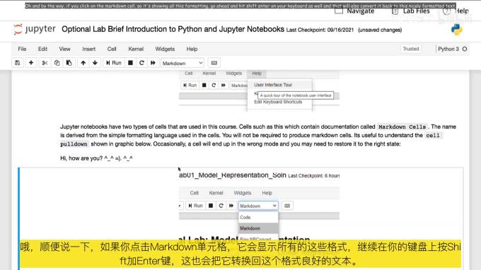
03:39这个可选实验展示了一些常见的 Python 代码，所以你之后可以在自己的 Jupyter 中继续运行。
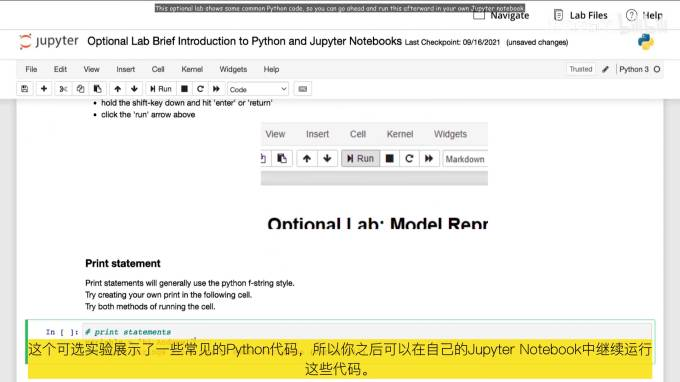
03:50当你自己进入这个时，我希望你选择单元格并按 Shift 加 Enter 键。
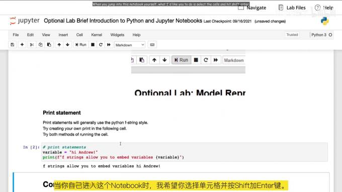
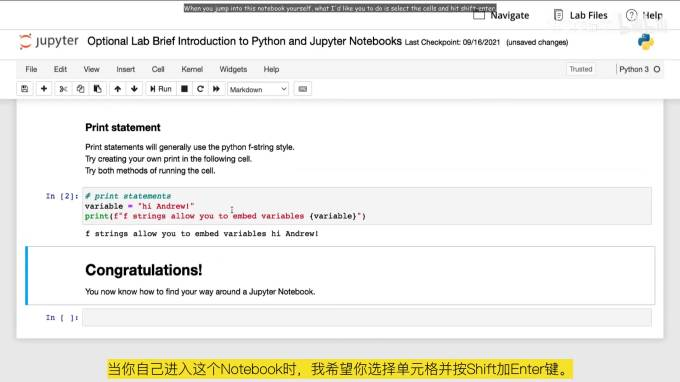
03:57嗯，通读代码，看看是否有意义，试着预测一下你认为这段代码会做什么，然后按 Shift 加 Enter 键。
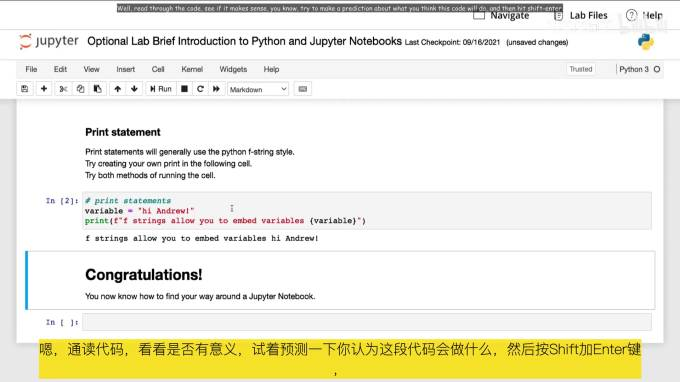
04:11再看看代码实际做了什么。
04:14如果你愿意，可以随意进入并编辑代码，修改代码，然后运行它，看看会发生什么。
04:22如果你以前没在 Jupyter 环境中操作过，我希望你能通过 Jupyter 更加熟悉 Python。
04:31我花了很多时间在 Jupyter 里尝试各种东西，所以希望你们也能从中获得乐趣。
04:40在那之后，我期待在下个视频中与你见面，我们将深入探讨监督学习问题，并开始充实我们的第一个监督学习算法。
04:52我希望那也会很有趣，并期待在那里见到你。